[1] FALSEdes Données & des Chiffres
Gestion & Exploitation des données
Philippe MICHEL
USRC - Hôpital NOVO
Ce topo contient…
- du Code informatique
- des Équations
- de la Littérature
- et un Chaton
De bonnes données ?
Du travail pour 5 ans…
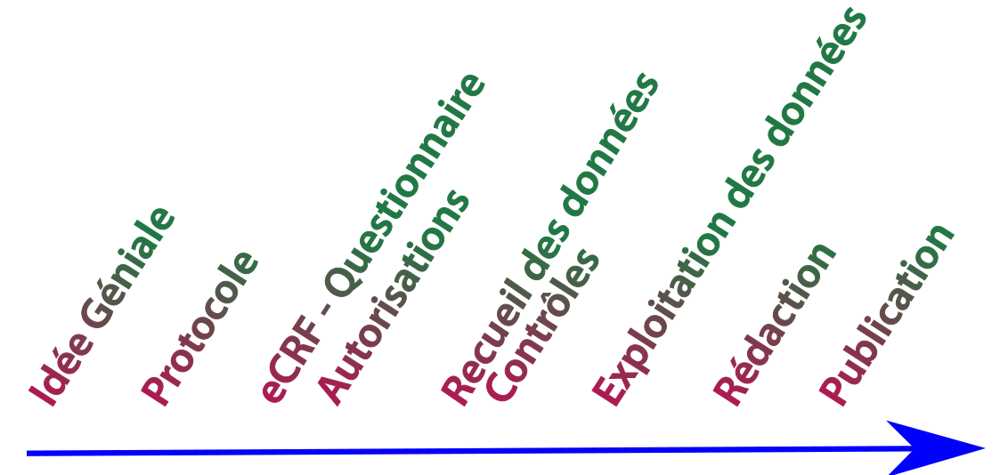Du travail pour 5 ans…
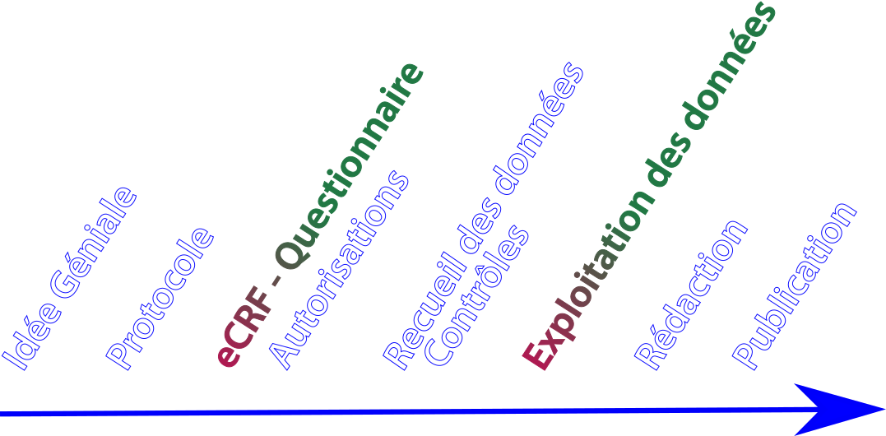Avant le recueil
Écrire le protocole
Principes & Erreurs
La science est reproductible : tout noter
Pour gérer des données on utilise une base de données
Quand techniquement ça se complique, on sous-traite
La science est reproductible
40 000 articles invalidés ou 3 900…
des Variables
Les variables c’est simple ?
Variables NUMÉRIQUES
Entiers
RASDécimaux
L'enfer des arrondis !!!Variables textuelles
Longtemps, je me suis couché de bonne heure. Parfois, à peine ma bougie éteinte, mes yeux se fermaient si vite que je n’avais pas le temps de me dire : « Je m’endors. » Et, une demi-heure après, la pensée qu’il était temps de chercher le sommeil m’éveillait ; je voulais poser le volume que je croyais avoir encore dans les mains et souffler ma lumière ; je n’avais pas cessé en dormant de faire des réflexions sur ce que je venais de lire, mais ces réflexions avaient pris un tour un peu particulier ; il me semblait que j’étais moi-même ce dont parlait l’ouvrage : une église, un quatuor, la rivalité de François Ier et de Charles Quint. Cette croyance survivait pendant quelques secondes à mon réveil ; elle ne choquait pas ma raison mais pesait comme des écailles sur mes yeux et les empêchait de se rendre compte que le bougeoir n’était plus allumé. Puis elle commençait à me devenir inintelligible, comme après la métempsycose les pensées d’une existence antérieure ; le sujet du livre se détachait de moi, j’étais libre de m’y appliquer ou non ; aussitôt je recouvrais la vue et j’étais bien étonné de trouver autour de moi une obscurité, douce et reposante pour mes yeux, mais peut-être plus encore pour mon esprit, à qui elle apparaissait comme une chose sans cause, incompréhensible, comme une chose vraiment obscure.
Variables textuelles
| ÉCRITURE |
|---|
| Oui |
| OUI |
| oui |
| oui |
| oui |
Variables textuelles
| ÉCRITURE |
|---|
| |Oui| |
| |OUI| |
| |oui| |
| |oui | |
| | oui| |
Variables discrètes
Non ordonnées
- Blond
- Brun
- Chatain
- Noir
- Roux
Ordonnées
Échelle de Likert
- Un peu
- Beaucoup
- Passionnément
- À la folie
Date & heure
| Norme | Écriture |
|---|---|
| Français | 25/12/2022 |
| Français | 25/12/22 |
| USA | 12-25-2022 |
| ISO 8601 | 2022-12-25 |
Variables autres
- Texte brut
- Images
- Cartes
- …
Liste de Variables
| nom | code | type | valeur |
|---|---|---|---|
| Date d'admission | date_adm | date | dd/mm/yyyy |
| Âge du patient | age | entier | 18 - 110 ans |
| Sexe | sexe | facteur | F/M |
| Poids | poids | décimal | 30-200 Kg |
| IGS II à l’admission | igs2 | entier | 6 - 150 |
| Oxygénothérapie | o2 | entier | 0 - 20 L/min |
| Ventilation invasive | vent_inv | facteur | oui/non |
| Sédation | sedat | facteur | oui/non |
| Curarisation | curare | facteur | oui/non/NSP |
Questionnaire HTML
HTML
<p> Âge du patient
<input type = 'NUMBER'
name = 'age'
min = '18'
max = '110'>
</p> Âge du patient
R
Two Sample t-test
data: age by esc
t = -2.6647, df = 1225, p-value = 0.007806
alternative hypothesis: true difference in means between group non and group oui is not equal to 0
95 percent confidence interval:
-5.479494 -0.832403
sample estimates:
mean in group non mean in group oui
61.11245 64.26840 des Données
Stocker les données
Stocker les données
Où stocker ?
Tableur
- nb max de cas
- Pas de sécurité à la saisie
- Pas de sauvegarde intégrée
- Travail collectif ?
Base de données
- Saisie simple (formulaire)
- Saisie normée, contrôlée
- Données sécurisées
- Base centralisée
Stockage des données en sécurité
- Technique Café, Disque dur HS…
- Anonyme Mais il faut pouvoir retrouver un dossier
- Accessible À tous les centres mais que aux centres
- Conforme CNIL…
Organiser son tableau
| id | var_1 | var_2 | var_3 | var_4 | var_5 |
|---|---|---|---|---|---|
| cas_1 | abc | abc | abc | abc | abc |
| cas_2 | abc | abc | abc | abc | abc |
| cas_3 | abc | abc | NA | abc | abc |
| cas_4 | abc | abc | abc | abc | abc |
| cas_5 | abc | abc | abc | abc | abc |
| cas_6 | abc | abc | abc | abc | abc |
Titres, Sujets & Variables 1
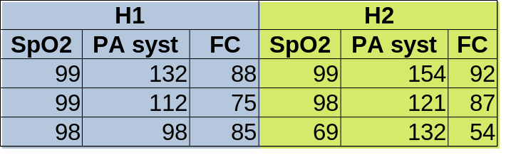Titres, Sujets & Variables 2

Titres, Sujets & Variables 3
Nombre de cas
Nombre de cas
\[n =\frac{(z_{(1-\mathbf{\alpha})}-z_{(1-\mathbf{\beta})})}{2(\arcsin\sqrt{P_{ref}}-\arcsin \sqrt{\color{red}{P_{nouveau}}})}\]
du Nombre
ISIS 2
Randomised trial of intravenous streptokinase, oral aspirin, both, or neither among 17,187 cases of suspected acute myocardial infarction: ISIS-2
Lancet 1988
p < 0,00001
du Nombre
GUSTO I
An International Randomized Trial Comparing Four Thrombolytic Strategies for Acute Myocardial Infarction
NEJM 1993
41 000 cas (p = 0,006)
Résumé du Avant
- Protocole
- Plan d’analyse Contractuel
- Base de données
- Autorisations légales
Recueil des Données
Après le recueil
Le problème
164 180 187 180 180 170 NA 170 165 168 170 160 172 NA 169 160 NA 175 170 NA 155 172 150 NA 170 NA 175 180 NA 165 175 156 167 180 174 180 184 155 176 159 175 169 170 158 180 155 178 147 155 180 156 178 165 175 171 172 170 165 182 160 NA NA 160 160 155 174 182 182 170 180 163 NA 176 177 177 145 173 173 176 153 170 168 167 167 169 169 170 150 160 172 174 175 152 170 175 165 181 179 NA 173 182 177 177 181 181 160 155 155 175 191 174 172 170 172 183 165 166 155 183 170 170 185 180 170 170 170 170 180 165 156 180 172 173 170 180 163 172 170 173 170 166 163 175 164 156 175 175 166 164 170 181 172 165 163 167 170 170 173 163 177 172 165 163 162 180 162 165 155 175 165 165 159 175 175 170 175 180 160 162 170 170 170 175 180 158 165 185 175 175 152 165 165 162 162 175 170 158 158 168 173 160 180 175 176 175 153 180 157 162 150 165 171 168 180 170 170 170 180 170 170 169 180 170 172 185 172 175 186 168 171 180 174 165 170 180 162 175 161 178 170 168 165 176 163 160 171 150 160 165 175 168 170 185 175 175 184 153 158 189 162 170 150 175 178 170 186 170 178 170 165 175 170 168 175 162 176 180 176 156 169 165 160 185 184 179 170 150 NA 177 180 168 165 152 170 180 NA 171 176 160 177 170 150 165 160 175 172 NA 150 NA 170 NA 165 150 167 167 170 165 160 NA 175 165 160 170 166 165 185 165 175 182 170 175 162 NA 167 162 163 177 160 165 167 165 165 180 172 NA 170 147 173 174 NA 172 160 160 170 177 170 162 170 160 161 155 165 170 170 145 169 175 175 171 163 178 180 171 178 163 170 170 160
Les stats servent à…
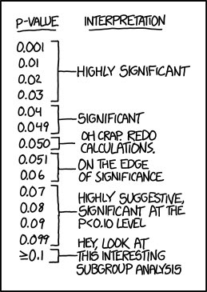
- Décrire sa population
- Présenter les résultats
- Faire des tests
Il n’y a pas que \(p<5\%\)
Il faut décrire ses données !
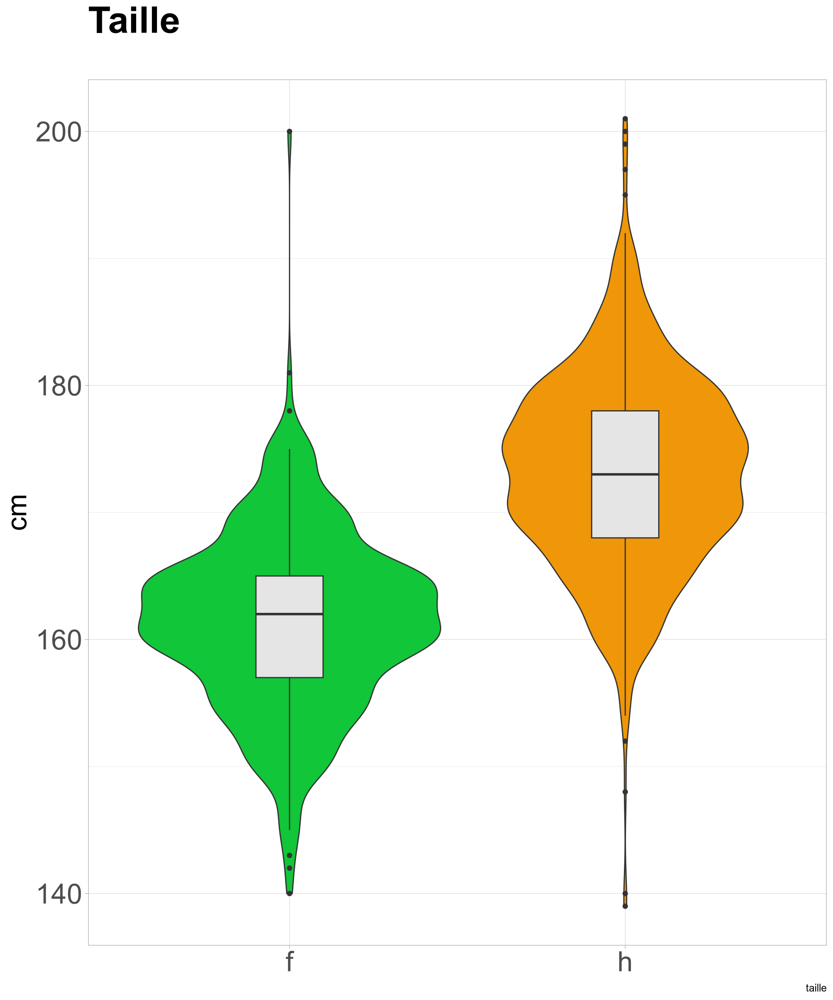
Simple
- Moyennes, écart-type
- % ± Intervalle de confiance
- Médiane, quartiles
Il n’y a pas que \(p<5\%\)
Il faut décrire ses données !
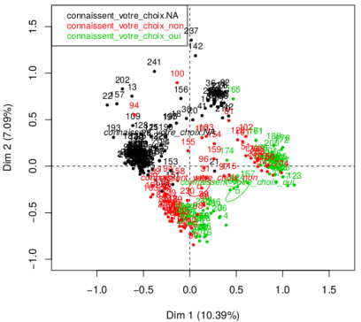
Data mining
- Clustering
- Analyse factorielle
- Deep Learning
- …
Texte
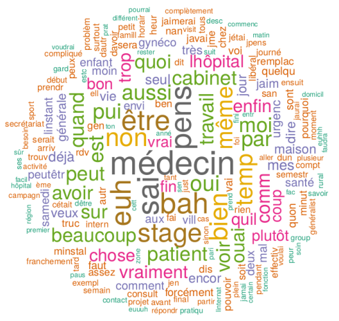Cartes

Cartes
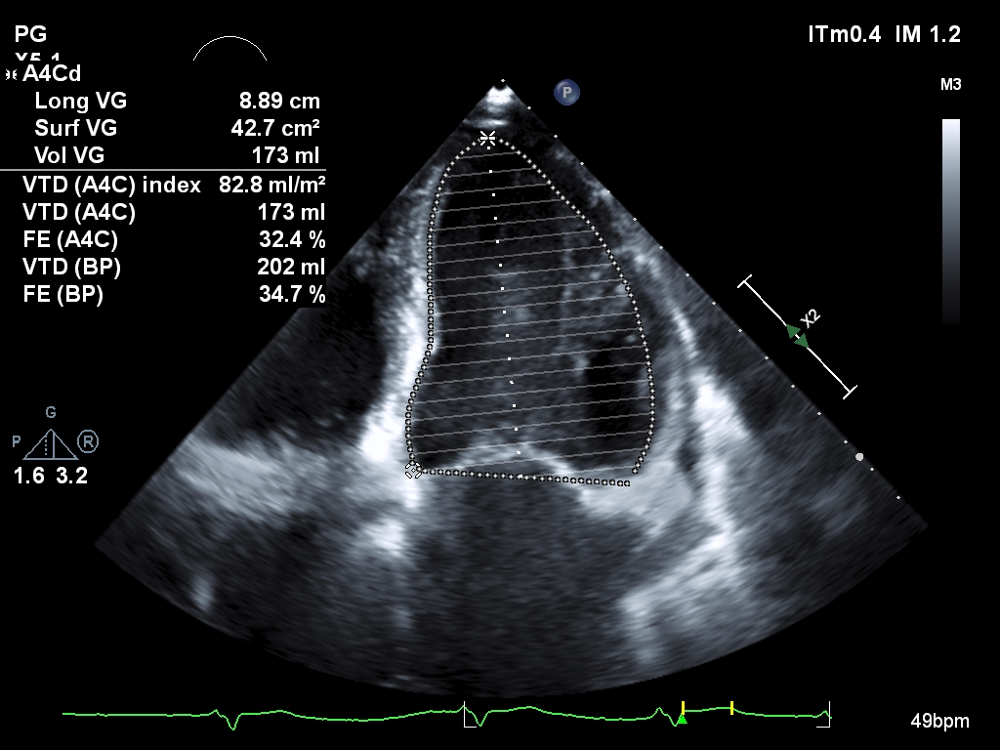Des tests…
Test simples
- t de Student
- \(\chi^2\)
- non paramétrique de Wilcoxon
- ANOVA
- Coefficient de corrélation
- Cochran-Mantel-Haenszel
- …
\[s^2 =\sum_{x=1}^n\frac{(x_n-\bar{x})^2}{n-1}\]
\[f(x)=\frac{1}{\sqrt{2\pi\sigma^{2}}}e^{\frac{-(x-\mu)^2}{2\sigma^{2}}}\]
\[t^{n-1}_{1-\alpha/2}<\frac{|m_1-m_2|}{S^2\sqrt{\frac{1}{n_1}+\frac{1}{n_2}}}\]
\[\xi_{CMH} = \frac{\big[{\sum_{i=1}^K (A_i - {N_{1i} M_{1i}\over T_i})\big]^2}} {\sum_{i=1}^K{N_{1i}N_{2i}M_{1i}M_{2i}\over T_i^2(T_i-1)}}\]
Analyse monovariée
| N | Escarres | p-value2 | ||
|---|---|---|---|---|
| non, N = 9971 | oui, N = 2311 | |||
| alite_7_j_av | 1,114 | <0.001 | ||
| non | 739 (82%) | 130 (60%) | ||
| oui | 160 (18%) | 85 (40%) | ||
| age | 1,227 | 64.00 (52.00, 73.00) | 67.00 (57.00, 74.50) | 0.011 |
| sexe | 1,138 | 0.055 | ||
| f | 318 (34%) | 59 (28%) | ||
| h | 606 (66%) | 155 (72%) | ||
| poids_ad | 1,158 | 75.00 (64.00, 87.25) | 78.00 (65.00, 95.00) | 0.024 |
| igs | 1,006 | 38.00 (27.00, 52.00) | 47.00 (38.00, 64.00) | <0.001 |
| 1 n (%); Median (IQR) | ||||
| 2 Pearson’s Chi-squared test; Wilcoxon rank sum test | ||||
Corrélation & Causalité
Corrélation & Causalité
Des tests…
Régressions
- Linéaire
- Logistique
- Score de propension
- …
\[Escarre =f(\alpha + \beta_1(\text{age})+\beta_2(\text{sexe})+\beta_3(\text{poids})+\epsilon\]
Analyse multivariée
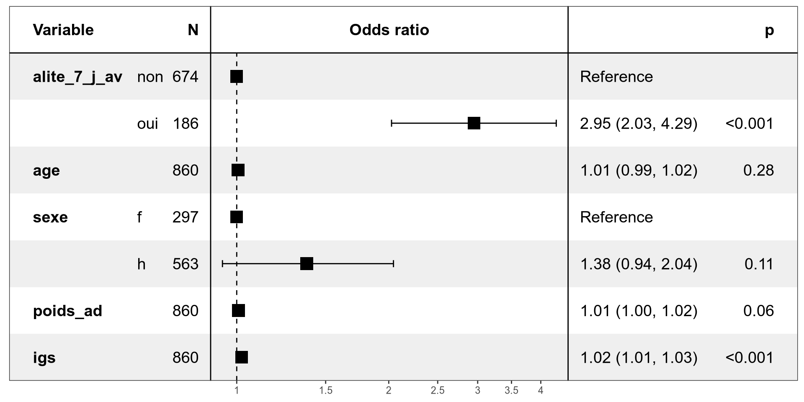Un peu de recul…
\[IC_{1-\alpha}= p \pm z_{\alpha/2}\sqrt{\frac{p(1-p)}{n}}\]
\[\mathbb{P}\left(-z_{\alpha/2} \leq \frac{\frac{X}{n}-p}{\sqrt{\frac{p(1-p)}{n}}} \leq z_{\alpha/2}\right)\thickapprox 1-\alpha\]
Un peu de recul…
\[IC_{1-\alpha}= p \pm z_{\alpha/2}\sqrt{\frac{p(1-p)}{n}}\]
Un peu de recul…
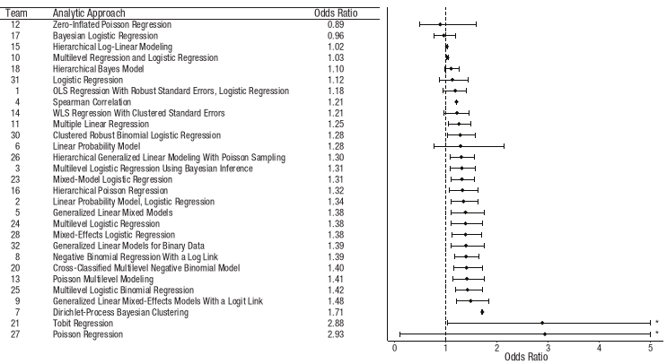
Un peu de recul…
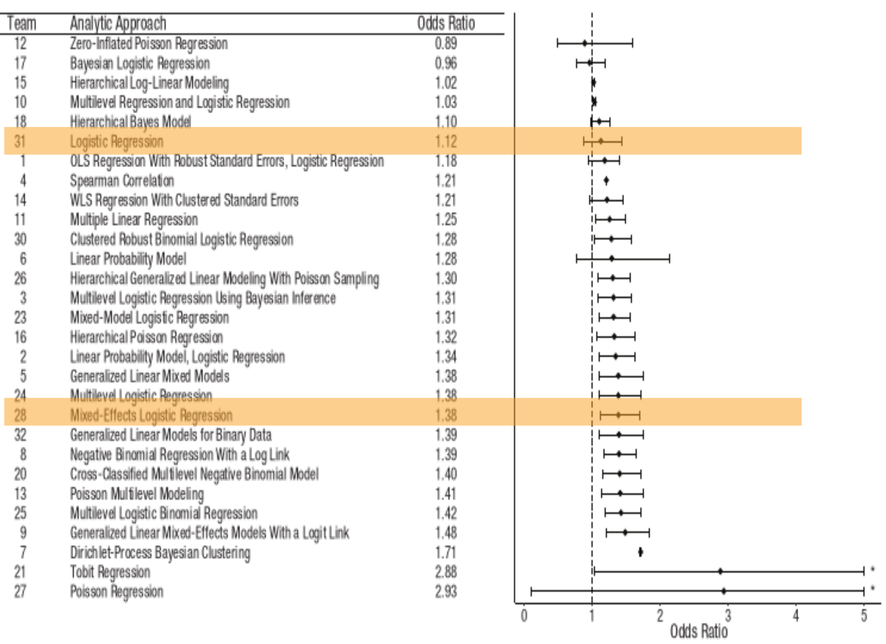
CONCLUSION
- Qualité des données
- Taille de l’échantillon
- Du bon sens
- Se méfier de tout
Il existe trois types de menteurs
Les menteurs
Les fieffés menteurs
Et les statisticiens